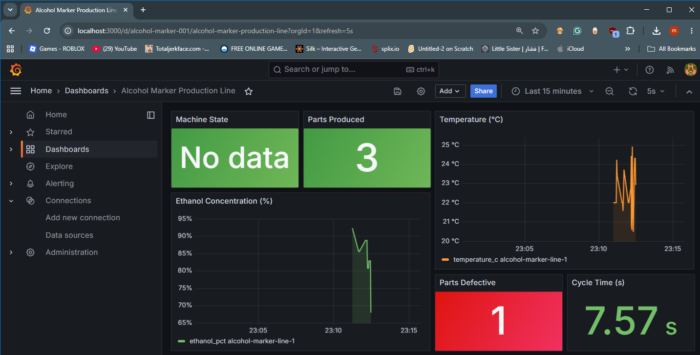

🖊 Alcohol Marker Production Line Simulator
What this project is
This project simulates a four-stage manufacturing line that assembles
alcohol-based ink markers. A Python/Flask backend runs the production logic as
a finite-state machine (IDLE → RUNNING → FAULTED), an HTML
operator panel (HMI) controls and visualises the line, every cycle is written
to an InfluxDB time-series database, and Grafana dashboards display the live
process data. The whole stack starts with a single
docker compose up.
Each marker passes through tip insertion, alcohol fill, body assembly, and a
cap & quality-control check. Any stage can reject a part — for example an
ethanol concentration outside the 70–90 % quality window — at which point
the machine reports a clear fault reason and transitions to the
FAULTED state until an operator resets it.
The HMI exposes the three required operator controls (Start, Stop, Reset), shows the current machine state and active stage, counts good versus defective parts, and surfaces the fault message when something goes wrong. Grafana provides the historical and real-time view used by a supervisor.
Production stages
| # | Stage | Defect condition |
|---|---|---|
| 1 | Tip Insertion | Nib holder misaligned |
| 2 | Alcohol Fill | Ethanol < 70 % or > 90 % |
| 3 | Body Assembly | Barrel click-lock failed |
| 4 | Cap & QC Check | Cap absent / leak test failed |
Screenshots


How it works
- Backend (
backend/main.py) — Flask REST API + FSM; runs the four stages in a background thread and writes each transition to InfluxDB. - Frontend (
frontend/index.html) — polls/statusonce per second and renders state, sensors, and faults. - Database — InfluxDB 2.7 bucket
markers, measurementproduction. - Dashboard — Grafana 10, auto-provisioned datasource and dashboard.
Source code
Full source, setup instructions, and the API reference are on GitHub: REPLACE_WITH_YOUR_REPO_URL.